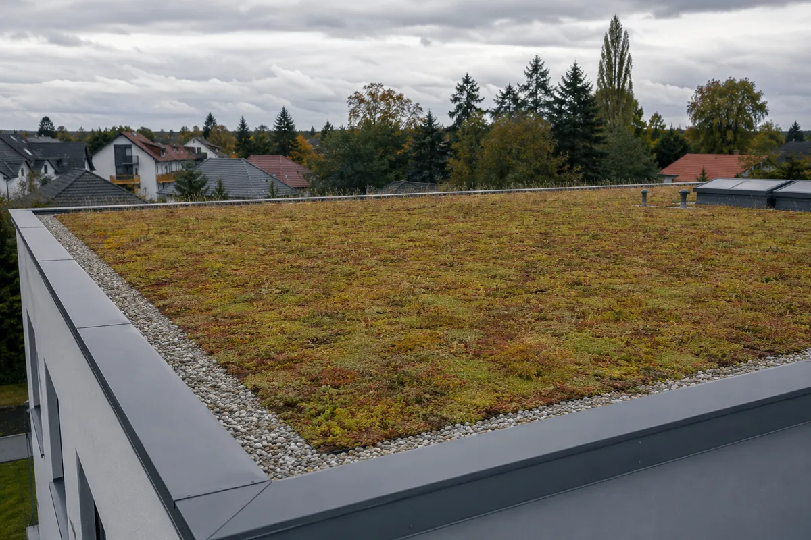
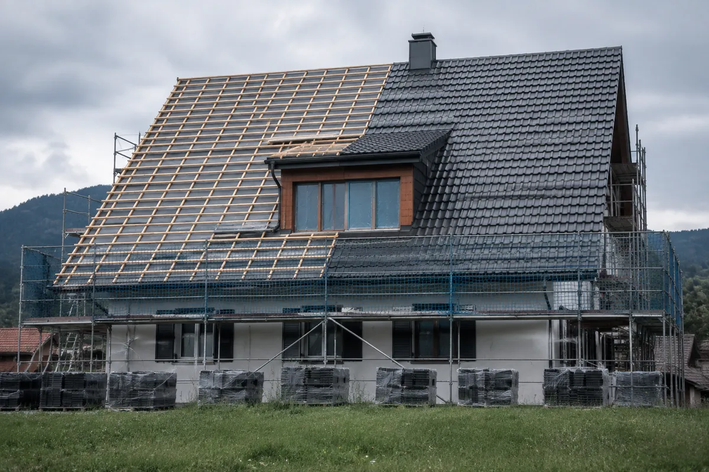
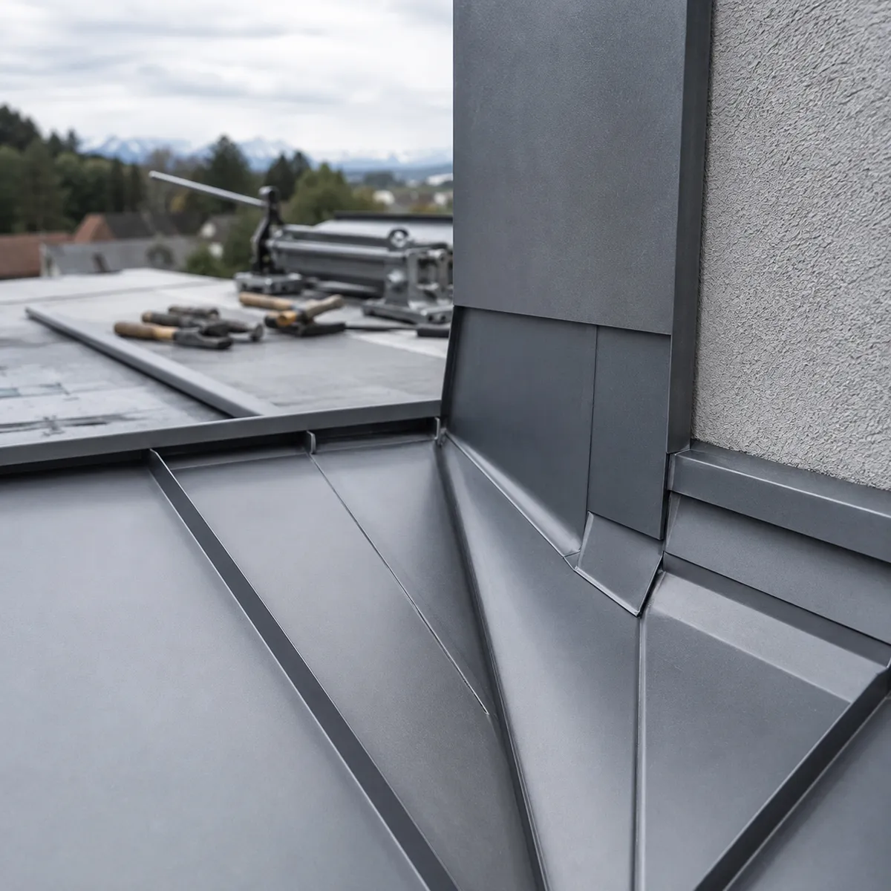
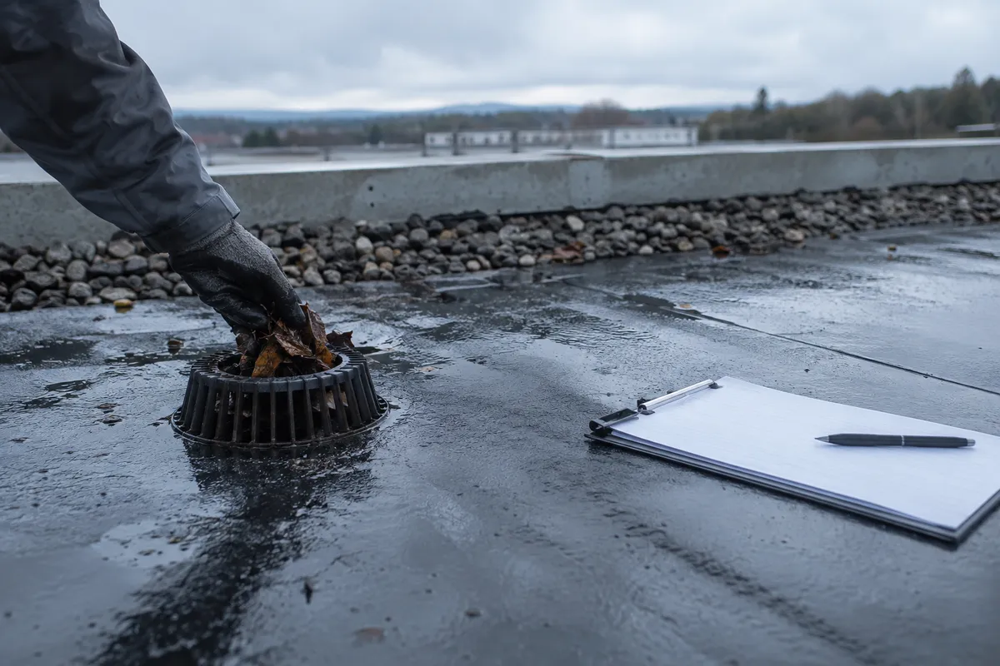
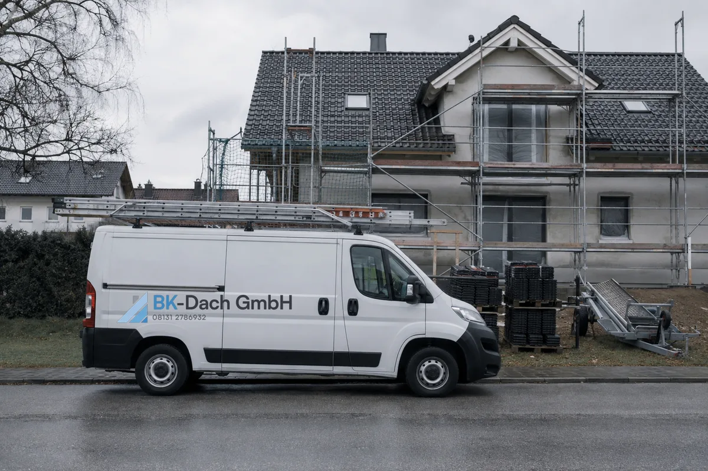

Dachbegrünung
Extensive Begrünung auf der fertigen Flachdachabdichtung — schützt die Abdichtung, puffert Regen und kühlt das Gebäude.
Karlsfeld bei München
Ein dichtes Dach entsteht nicht aus Material allein. Es braucht Erfahrung, saubere Detailarbeit und Termintreue. Dafür stehen wir seit drei Jahrzehnten.
Beratung anfragenWas wir machen
Wir decken das gesamte Spektrum rund ums Dach ab — von der Flachdachabdichtung über Dachbegrünung und Steildacheindeckung bis zu Spenglerei, Service und Wartung. Ein Betrieb, ein Ansprechpartner, von der ersten Begutachtung bis zur Abnahme.
Leistungen

Extensive Begrünung auf der fertigen Flachdachabdichtung — schützt die Abdichtung, puffert Regen und kühlt das Gebäude.

Vom undichten Anschluss bis zum kompletten Neuaufbau. Wir öffnen, prüfen und sagen Ihnen ehrlich, was wirklich nötig ist.

Kehlen, Attiken, Rinnen und Anschlüsse aus Titanzink — in der eigenen Werkstatt gekantet und auf dem Dach passgenau eingebaut.

Regelmäßige Kontrolle von Abläufen, Anschlüssen und Nähten. Der günstigste Weg, einen Wasserschaden gar nicht erst entstehen zu lassen.
